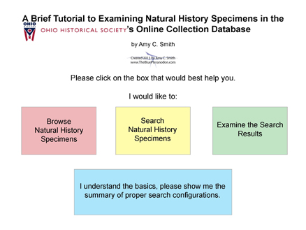

|
|
Here are resources that are pertinent to specific museums, identified by their logo. These are designed to help the audience when they want to learn more about the museum and/or visit!
| |
Online Catalog Tutorials |
| |
| Searching for Natural History Specimens in the Ohio Historical Society's Online Catalog |
|
The Ohio Historical Society hosts some information online about its collections through its new database, Cuadra Star. With the various methods of search available, searching for specific parameters (i.e., geologic age or organism class) can be daunting. This interactive PDF serves as a guide to browsing and searching for natural history specimens, and includes a one page summary of optimum search settings for specific types of queries. Please click the graphic below to open the pdf in a new window. |
|  |
|
|